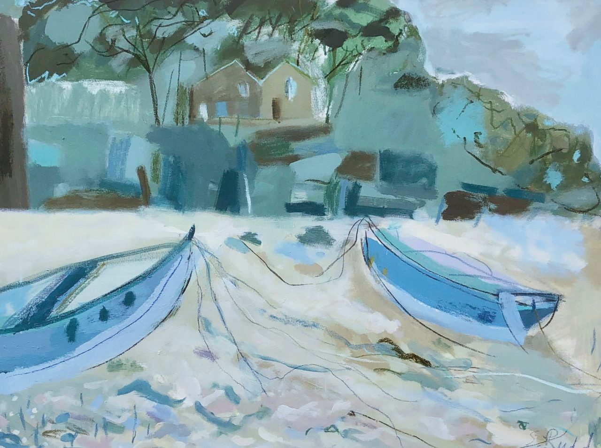
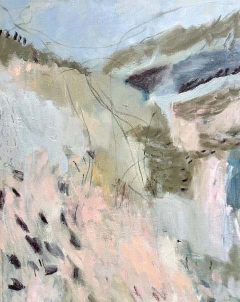

Contemporary
landscape painting
Inspired by the British landscape, from quiet stretches of coast to the colours and textures of the countryside.
Blue Boats
Selected work
Featured
A selection of work inspired by the colours, textures and atmosphere of the British coast and countryside.

About
About the artist
Sam Rudd is a contemporary British landscape painter, drawing inspiration from the coast, countryside and places encountered along the way.
Her paintings explore the shapes, colours and atmosphere of the landscape, from boats resting on the shore to distant churches, open fields and weathered hillsides. Working with loose marks and layered colour, each painting captures a sense of place without describing every detail.